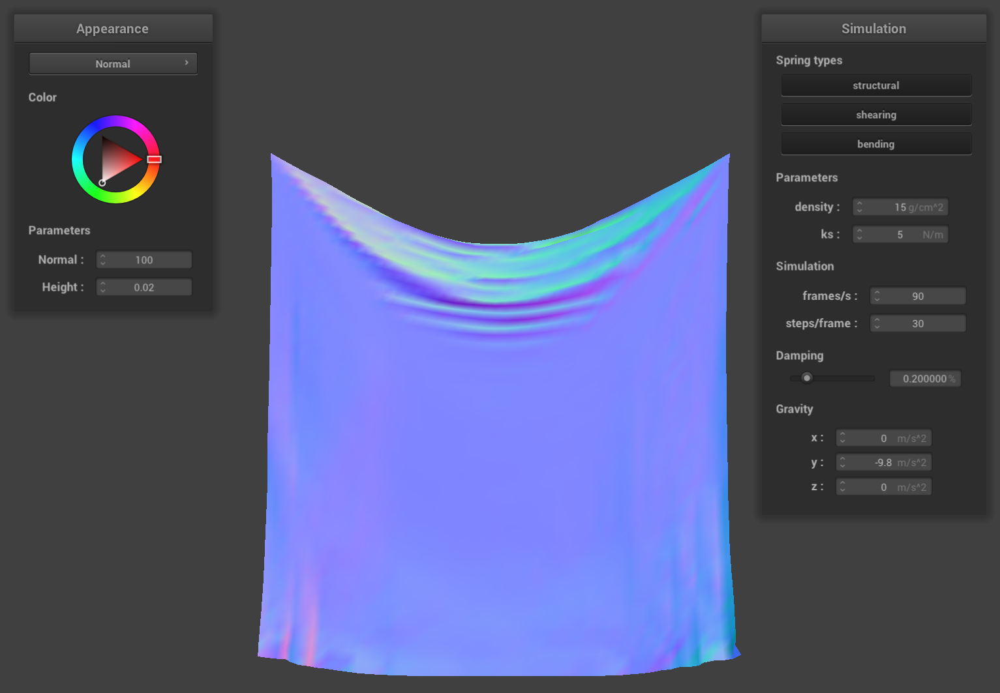
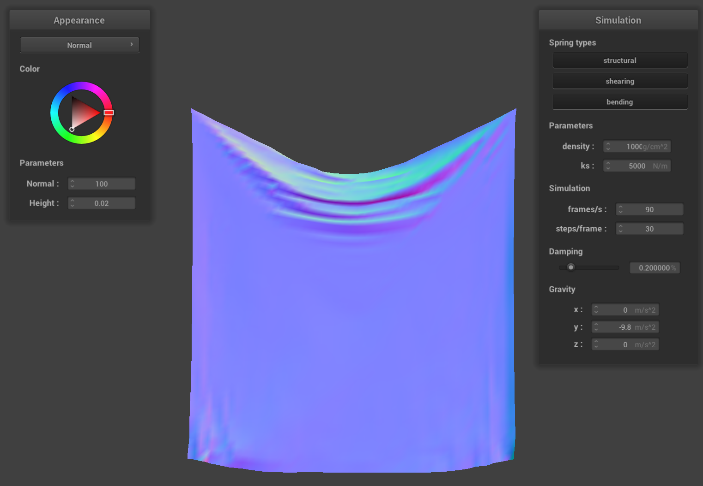

CS184/284A Spring 2025 Homework 4 Write-Up
Link to webpage: https://cal-cs184-student.github.io/hw-webpages-stephen_webpage/hw4/index.html
Link to GitHub repository: https://github.com/cal-cs184-student/sp25-hw4-stephen_hw4

Overview
In this homework we implemented a classic cloth simulation using point masses and springs to represent our cloth. By representing our cloth in this way, we can use physically-based methods to compute how our cloth should behave as it interacts with gravity, other objects, and itself. Finally we implement some shaders to bring our cloth to life in real time!Part 1: Masses and springs
The first step to creating our cloth simulation was to construct the cloth itself. We do this by representing the cloth with a grid of point masses, with springs between those point masses. These springs between the point masses represent various constraints that our model has to properly represent our cloth such as structural, shearing, and bending constraints. These constraints followed these rules:
1. Structural constraints exist between a point mass and the point masses to its left as well as the point mass above it.
2. Shearing constraints exist between a point mass and the point mass to its diagonal upper left as well as the point mass to its diagonal upper right.
3. Bending constraints exist between a point mass and the point mass two away to its left as well as the point mass two above it.
Here's an example of what this looks like with a wireframe of our pinned2 scene
Below we have some examples of what the same scene would look like without some of the constraints enabled.
|
|
|
|
Part 2: Simulation via numerical integration
In this next part, we implemented the physical equations of motion that dictate how we apply forces to the point masses in the cloth, and subsequently how the cloth moves in each time step of our simulation. We have a few constants such as the spring constantks, density, and damping that we've experimented with in this part. Below we have some images that demonstrate how these parameters affect the way cloth behaves.
Spring Constant (ks)
The spring constantks controls how stiff the spring is. When the value of ks is low, we see much more sagging in the middle of the cloth, as well as many more ripples in that middle section. This makes sense since this means that the springs are less stiff and are consequently more able to be deformed. Similarly, we can see that when the value of ks is high, we see much less sagging and rippling, which makes sense since it's much stiffer and will hold its shape more.

ks=5 |
ks=50,000 |
Density
When varying the density of the cloth, we can see the inverse of the effect that we saw when varying the spring constant. When the density of the cloth is low, we see less sagging and rippling, and when the density of the cloth is high, we see more sagging and rippling. This makes sense since this parameter affects the mass of each of the point masses, so lower density will have lower mass and lower force.
density=1g/cm^2 |

density=10,000g/cm^2 |
Damping
Finally when varying the damping parameter, we can see that with low damping, the cloth will rapidly swing back and forth, swing back much higher, and deforms much more. With high damping, the cloth slowly settles to the stable position, and behaves much more rigidly. This makes sense since damping represents energy loss due throughout the simulation.
damping~=3% |
damping~=82% |
Here's a picture of a different scene with 4 pinned points
Part 3: Handling collisions with other objects
In this part we implemented collisions with other objects, namely spheres and planes. For handling collisions with spheres, we begin by determining whether a point mass is inside the sphere. If this is the case, we compute the tangent point on the sphere's surface, and create a correction vector to bump the point mass above the surface at this tangent point. We then scale this correction vector down by 1 - friction and apply it to the point mass's position.
For handling collisions with planes, we begin by determining if the point mass crossed the plane by checking its previous position and new position's dot products against the plane's normal vector. If they have different signs, then it crossed the plane. If this is the case, we similarly compute the tangent point on the plane, which we use in conjunction with a small SURFACE_OFFSET from the plane in the direction of its normal vector to compute a correction vector. Like before, we scale this correction vector down by 1 - friction and apply it to the point mass's position.
ks=500 |

ks=5,000 |
ks=50,000 |
In the images above, we can see examples of the cloth colliding with a sphere that was implemented in this section. We can see that as we increased the spring constant ks, the cloth doesn't wrap around the sphere as tightly, and sticks to its original shape more closely. We can also see that there are fewer folds in the cloth as we increase the sping constant ks.
Part 4: Handling self-collisions
Now that we implemented collisions of the cloth with other objects, we need to implement collisions of the cloth with itself. Notably the cloth shouldn't clip through itself as it falls down and folds over itself. To accomplish this, we implemented self-collisions in this section. Rather than doing a naive O(n^2) search doing a pairwise check for all point masses, we implemented a binning approach using a hash table to narrow our search down to only check relevant neighboring point masses. We create a 3D grid of cells that divides up the simulation space that gets recomputed at each time step. We compute a unique hash for each cell within this grid so that any point mass within that cell will hash to the same value. Now that we have a way to narrow our search space down using this hashing and grid cell technique, we can for every point mass, simply check only the neighboring masses in relevant cells to compute a correction vector averaged over all relevant point masses and scaled by the number of simulation steps. Below we have an example of what this looks like over time in our simulation:
|
|
|
|
|
|
density=1 |
density=1 |
density=10 |
density=10 |
density=100 |
density=100 |
ks. Once again, in each row we have captures of fabric with the same density at an early point in the simulation on the left, and at the end of the simulation on the right. We can see the inverse of the relationship we saw with density. Lower values of ks had more wrinkly, complex folding patterns, while higher values of ks had less wrinkly, simpler folding patterns.
ks=500 |
ks=500 |
ks=5,000 |
ks=5,000 |
ks=50,000 |
ks=50,000 |
Part 5: Shaders
In this final section, we wrote some shader programs for our cloth. A shader program is a small piece of code that runs on the GPU to control how graphics are rendered. It determines things like the color, lighting, and material appearance of objects in a 3D scene. Shader programs are highly parallel because they run independently on many vertices and pixels at once, enabling us to maintain our simulation in real-time. In our shader programs we have vertex shaders and fragment shaders. The vertex shader runs once per vertex, and computes per-vertex properties like normal direction and passes them to the fragment shader. The fragment shader in turn runs once per pixel (fragment) on the screen, and computes the final color by applying lighting equations and material properties.
One example of a shader that we can implement is Blinn-Phong shading. Blinn-Phong shading consists of three components of light: ambient, diffuse, and specular. The ambient component accounts for the base lighting of the scene, the diffuse component represents one-bounce light that is scattered in all directions, and the specular component represents mirror-like, reflective behavior. We can simply sum these three components to get Blinn-Phong shading. Here's what this looks like:
|
|
|
|

We implement bump mapping and displacement mapping shaders as well. Bump making creates the illusion of rough surface detials by adjusting lighting normals, while the actual mesh geometry remains the same. Displacement mapping physically alters the mesh geometry based on the texture to create these rough surface details. We can see that they achieve similar effects. Note that displacement mapping needs a high-resolution mesh to look good though it can create more realistic surface roughness than bump mapping can, we can see this below as we increase the resolution from 16 to 128 in the images below:
|
|
|
|
|
|